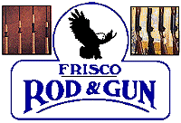
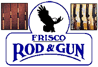

Home
What You'll Catch
Fishing Reports
About the Boat
Photo Gallery
Customer Testimonials
Book A Charter
Recipes
 



What to Bring
1. Food
2. Beverages
3. Sunscreen
4. Camera
5. Small Cooler
6. Jacket
|
|
About the Captain
|
Captain Doug Martin
Capt. Doug is Coast Guard licensed and has over 25 years of local fishing experience. He lives in Frisco, NC and is available to fish year round.
|
The "Celebrity"
Captain Doug Martin is known throughout Hatteras Island as one of the best inshore fishermen around. He has had articles written about him in publications as local as the Hatteras Monitor to as far away as the Charlotte Observer. Even local television celebrity Herb Gordon of "The Weekend Fisherman" filmed a day with Capt. Martin. Doug has been fishing these waters for over 25 years and knows them like the back of his hand.
|
N.C. Saltwater Fishing Magazine
The Sportfishing Report

Allen Odom and Glen Wendt fished with Captain Doug years ago one April and wrote quite an extensive article about their experience. The article is best summed up below:
"We enjoyed fishing with (Doug) so much we spent two of our seven days on his 21 foot center console...we combined drifting cut bait and jigging lures in the sound and caught our limit of grey trout and bluefish. The action was, at times, fast and furious and it was not unusual for all three anglers to be hooked up at once, with several doubles on the two-hook rigs....After adding some flounder and Spanish mackerel to the cooler, we cast for big drum and troll for kings. We didn't find any drum, but got into the best action of the trip when we hit a school of false albacore...Glen hooked two and lost them both before the heroic efforts of Captain Doug saved his day. With a fresh fish stripping line fast, Glen in his excitement, ...hit the free-spool lever...I assumed the only thing we could do was cut the line and let the fish go, but Captain Doug had a different plan. He cut the line all right, but only after pulling in enough to tie to the boat cleat. He then cut out the tangle with his bait knife, leaving enough line on the reel to fight the fish. He restrung the rod and tied the two lines together. Talk about performing under pressure! Glen got his fish in and released it unharmed."
|
|


{kind=link}
{kind=link}